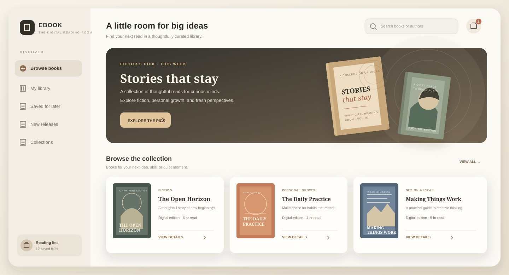

FITNESS PLATFORM · 2025
BFIT
Developed custom workout plans, nutrition tracking, and live or on-demand routines for a fitness platform using Python and Django.
View live project ↗01 / 02
I build web and mobile applications across the stack, connecting frontend experiences with backend services and practical AI features. My tools include Python, Django, Next.js, Node.js, and Supabase.

Explore the features I built, the problems each project addresses, and the technologies behind the work.
Developed custom workout plans, nutrition tracking, and live or on-demand routines for a fitness platform using Python and Django.
View live project ↗
Implemented account sign-in, searchable book listings, a shopping cart, and MySQL-backed data for an online bookstore using PHP.
I’m Anand, a BCA graduate and software developer in Perumbavoor, India, with hands-on experience in web and mobile development, backend integration, and applied AI.
At Edxera, I built a live emotion-detection workflow using DeepFace and OpenCV, including video preprocessing, and developed a Django-integrated AI chatbot.
Edxera · Kaloor
Develop AI-enabled web and Flutter applications using Next.js, Node.js, Django, and Supabase; contribute to database integration and deployment.Edxera · Kaloor
Engineered a live emotion-detection workflow with DeepFace and OpenCV, built a Django-integrated AI chatbot, and implemented supervised and unsupervised ML solutions.SKCMS · Mahatma Gandhi University
AVODHA · Ernakulam
Six-month course covering data manipulation, machine learning algorithms, and AI development.AVODHA · Certificate of completion · 24 Jan 2026
Elixir Learning Hub · Kochi
Certificate of participation · 16 Aug 2025Elixir Learning Hub · AI/ML Foundations with Python
Futurix Edu Tech Academy · Kochi
“Analyze to Succeed” · Certificate of participation · 30 Aug 2025Futurix Edu Tech Academy · Analyze to Succeed
Core technologies from my projects, professional experience, and AI training.
I’m seeking a software or full-stack developer role where I can contribute across frontend, backend, and applied AI.